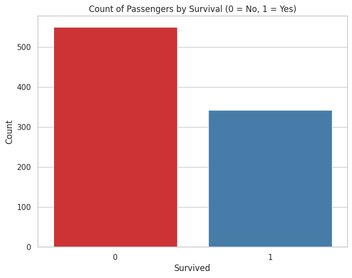
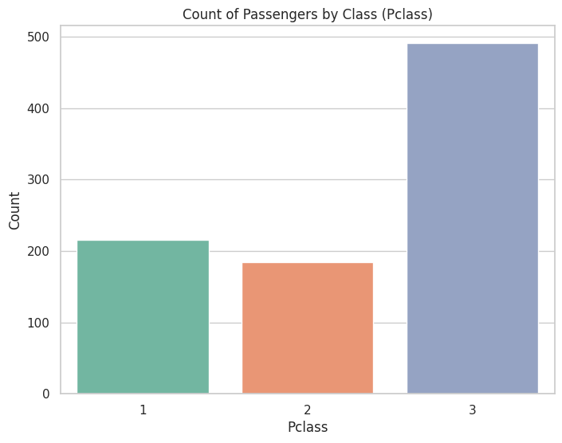

import pandas as pd
import numpy as np
import matplotlib.pyplot as plt
import seaborn as sns
from sklearn.model_selection import train_test_split
from sklearn.preprocessing import LabelEncoder, StandardScalerdata = pd.read_csv('/content/sample_data/Titanic-Dataset.csv')
data| PassengerId | Survived | Pclass | Name | Sex | Age | SibSp | Parch | Ticket | Fare | Cabin | Embarked | |
|---|---|---|---|---|---|---|---|---|---|---|---|---|
| 0 | 1 | 0 | 3 | Braund, Mr. Owen Harris | male | 22.0 | 1 | 0 | A/5 21171 | 7.2500 | NaN | S |
| 1 | 2 | 1 | 1 | Cumings, Mrs. John Bradley (Florence Briggs Th... | female | 38.0 | 1 | 0 | PC 17599 | 71.2833 | C85 | C |
| 2 | 3 | 1 | 3 | Heikkinen, Miss. Laina | female | 26.0 | 0 | 0 | STON/O2. 3101282 | 7.9250 | NaN | S |
| 3 | 4 | 1 | 1 | Futrelle, Mrs. Jacques Heath (Lily May Peel) | female | 35.0 | 1 | 0 | 113803 | 53.1000 | C123 | S |
| 4 | 5 | 0 | 3 | Allen, Mr. William Henry | male | 35.0 | 0 | 0 | 373450 | 8.0500 | NaN | S |
| ... | ... | ... | ... | ... | ... | ... | ... | ... | ... | ... | ... | ... |
| 886 | 887 | 0 | 2 | Montvila, Rev. Juozas | male | 27.0 | 0 | 0 | 211536 | 13.0000 | NaN | S |
| 887 | 888 | 1 | 1 | Graham, Miss. Margaret Edith | female | 19.0 | 0 | 0 | 112053 | 30.0000 | B42 | S |
| 888 | 889 | 0 | 3 | Johnston, Miss. Catherine Helen "Carrie" | female | NaN | 1 | 2 | W./C. 6607 | 23.4500 | NaN | S |
| 889 | 890 | 1 | 1 | Behr, Mr. Karl Howell | male | 26.0 | 0 | 0 | 111369 | 30.0000 | C148 | C |
| 890 | 891 | 0 | 3 | Dooley, Mr. Patrick | male | 32.0 | 0 | 0 | 370376 | 7.7500 | NaN | Q |
891 rows × 12 columns
data.head(4)| PassengerId | Survived | Pclass | Name | Sex | Age | SibSp | Parch | Ticket | Fare | Cabin | Embarked | |
|---|---|---|---|---|---|---|---|---|---|---|---|---|
| 0 | 1 | 0 | 3 | Braund, Mr. Owen Harris | male | 22.0 | 1 | 0 | A/5 21171 | 7.2500 | NaN | S |
| 1 | 2 | 1 | 1 | Cumings, Mrs. John Bradley (Florence Briggs Th... | female | 38.0 | 1 | 0 | PC 17599 | 71.2833 | C85 | C |
| 2 | 3 | 1 | 3 | Heikkinen, Miss. Laina | female | 26.0 | 0 | 0 | STON/O2. 3101282 | 7.9250 | NaN | S |
| 3 | 4 | 1 | 1 | Futrelle, Mrs. Jacques Heath (Lily May Peel) | female | 35.0 | 1 | 0 | 113803 | 53.1000 | C123 | S |
data.tail()| PassengerId | Survived | Pclass | Name | Sex | Age | SibSp | Parch | Ticket | Fare | Cabin | Embarked | |
|---|---|---|---|---|---|---|---|---|---|---|---|---|
| 886 | 887 | 0 | 2 | Montvila, Rev. Juozas | male | 27.0 | 0 | 0 | 211536 | 13.00 | NaN | S |
| 887 | 888 | 1 | 1 | Graham, Miss. Margaret Edith | female | 19.0 | 0 | 0 | 112053 | 30.00 | B42 | S |
| 888 | 889 | 0 | 3 | Johnston, Miss. Catherine Helen "Carrie" | female | NaN | 1 | 2 | W./C. 6607 | 23.45 | NaN | S |
| 889 | 890 | 1 | 1 | Behr, Mr. Karl Howell | male | 26.0 | 0 | 0 | 111369 | 30.00 | C148 | C |
| 890 | 891 | 0 | 3 | Dooley, Mr. Patrick | male | 32.0 | 0 | 0 | 370376 | 7.75 | NaN | Q |
data.info()<class 'pandas.core.frame.DataFrame'>
RangeIndex: 891 entries, 0 to 890
Data columns (total 12 columns):
# Column Non-Null Count Dtype
--- ------ -------------- -----
0 PassengerId 891 non-null int64
1 Survived 891 non-null int64
2 Pclass 891 non-null int64
3 Name 891 non-null object
4 Sex 891 non-null object
5 Age 714 non-null float64
6 SibSp 891 non-null int64
7 Parch 891 non-null int64
8 Ticket 891 non-null object
9 Fare 891 non-null float64
10 Cabin 204 non-null object
11 Embarked 889 non-null object
dtypes: float64(2), int64(5), object(5)
memory usage: 83.7+ KB
data.describe()| PassengerId | Survived | Pclass | Age | SibSp | Parch | Fare | |
|---|---|---|---|---|---|---|---|
| count | 891.000000 | 891.000000 | 891.000000 | 714.000000 | 891.000000 | 891.000000 | 891.000000 |
| mean | 446.000000 | 0.383838 | 2.308642 | 29.699118 | 0.523008 | 0.381594 | 32.204208 |
| std | 257.353842 | 0.486592 | 0.836071 | 14.526497 | 1.102743 | 0.806057 | 49.693429 |
| min | 1.000000 | 0.000000 | 1.000000 | 0.420000 | 0.000000 | 0.000000 | 0.000000 |
| 25% | 223.500000 | 0.000000 | 2.000000 | 20.125000 | 0.000000 | 0.000000 | 7.910400 |
| 50% | 446.000000 | 0.000000 | 3.000000 | 28.000000 | 0.000000 | 0.000000 | 14.454200 |
| 75% | 668.500000 | 1.000000 | 3.000000 | 38.000000 | 1.000000 | 0.000000 | 31.000000 |
| max | 891.000000 | 1.000000 | 3.000000 | 80.000000 | 8.000000 | 6.000000 | 512.329200 |
data.shape(891, 12)corr=data.corr()
corr<ipython-input-28-e43ea23b92af>:2: FutureWarning: The default value of numeric_only in DataFrame.corr is deprecated. In a future version, it will default to False. Select only valid columns or specify the value of numeric_only to silence this warning.
corr=data.corr()
| PassengerId | Survived | Pclass | Age | SibSp | Parch | Fare | |
|---|---|---|---|---|---|---|---|
| PassengerId | 1.000000 | -0.005007 | -0.035144 | 0.036847 | -0.057527 | -0.001652 | 0.012658 |
| Survived | -0.005007 | 1.000000 | -0.338481 | -0.077221 | -0.035322 | 0.081629 | 0.257307 |
| Pclass | -0.035144 | -0.338481 | 1.000000 | -0.369226 | 0.083081 | 0.018443 | -0.549500 |
| Age | 0.036847 | -0.077221 | -0.369226 | 1.000000 | -0.308247 | -0.189119 | 0.096067 |
| SibSp | -0.057527 | -0.035322 | 0.083081 | -0.308247 | 1.000000 | 0.414838 | 0.159651 |
| Parch | -0.001652 | 0.081629 | 0.018443 | -0.189119 | 0.414838 | 1.000000 | 0.216225 |
| Fare | 0.012658 | 0.257307 | -0.549500 | 0.096067 | 0.159651 | 0.216225 | 1.000000 |
plt.subplots(figsize=(20,15))
sns.heatmap(corr,annot=True)<Axes: >data.Age.value_counts()24.00 30
22.00 27
18.00 26
19.00 25
28.00 25
..
36.50 1
55.50 1
0.92 1
23.50 1
74.00 1
Name: Age, Length: 88, dtype: int64data.Survived.value_counts()0 549
1 342
Name: Survived, dtype: int64#Handling Null Values
data.isnull().any()PassengerId False
Survived False
Pclass False
Name False
Sex False
Age True
SibSp False
Parch False
Ticket False
Fare False
Cabin True
Embarked True
dtype: booldata.isnull().sum()PassengerId 0
Survived 0
Pclass 0
Name 0
Sex 0
Age 177
SibSp 0
Parch 0
Ticket 0
Fare 0
Cabin 687
Embarked 2
dtype: int64data["Age"].fillna(data["Age"].mean(),inplace=True)data["Cabin"].fillna(data["Cabin"].mode()[0],inplace=True)data.head()| PassengerId | Survived | Pclass | Name | Sex | Age | SibSp | Parch | Ticket | Fare | Cabin | Embarked | |
|---|---|---|---|---|---|---|---|---|---|---|---|---|
| 0 | 1 | 0 | 3 | Braund, Mr. Owen Harris | male | 22.0 | 1 | 0 | A/5 21171 | 7.2500 | B96 B98 | S |
| 1 | 2 | 1 | 1 | Cumings, Mrs. John Bradley (Florence Briggs Th... | female | 38.0 | 1 | 0 | PC 17599 | 71.2833 | C85 | C |
| 2 | 3 | 1 | 3 | Heikkinen, Miss. Laina | female | 26.0 | 0 | 0 | STON/O2. 3101282 | 7.9250 | B96 B98 | S |
| 3 | 4 | 1 | 1 | Futrelle, Mrs. Jacques Heath (Lily May Peel) | female | 35.0 | 1 | 0 | 113803 | 53.1000 | C123 | S |
| 4 | 5 | 0 | 3 | Allen, Mr. William Henry | male | 35.0 | 0 | 0 | 373450 | 8.0500 | B96 B98 | S |
#Data Visualization
# Data Visualization
# Set the style for Seaborn plots
sns.set(style="whitegrid")
# Plot the count of passengers who survived and who didn't
plt.figure(figsize=(8, 6))
sns.countplot(data=data, x='Survived', palette='Set1')
plt.title('Count of Passengers by Survival (0 = No, 1 = Yes)')
plt.xlabel('Survived')
plt.ylabel('Count')
plt.show()
# Plot the count of passengers by their class (Pclass)
plt.figure(figsize=(8, 6))
sns.countplot(data=data, x='Pclass', palette='Set2')
plt.title('Count of Passengers by Class (Pclass)')
plt.xlabel('Pclass')
plt.ylabel('Count')
plt.show()
# Plot a histogram of passenger ages
plt.figure(figsize=(8, 6))
sns.histplot(data=data, x='Age', bins=30, kde=True, color='skyblue')
plt.title('Distribution of Passenger Ages')
plt.xlabel('Age')
plt.ylabel('Frequency')
plt.show()# Plot the count of passengers by gender (Sex)
plt.figure(figsize=(8, 6))
sns.countplot(data=data, x='Sex', palette='pastel')
plt.title('Count of Passengers by Gender (Sex)')
plt.xlabel('Sex')
plt.ylabel('Count')
plt.show()# Plot a bar chart of passengers' embarkation points (Embarked)
plt.figure(figsize=(8, 6))
sns.countplot(data=data, x='Embarked', palette='Set3')
plt.title('Count of Passengers by Embarkation Point (Embarked)')
plt.xlabel('Embarked')
plt.ylabel('Count')
plt.show()#Handling Outliers
#outlier treatment
# Assuming 'Age' is the feature you want to handle outliers for
# Import necessary libraries
import seaborn as sns
import numpy as np
# Create a boxplot to visualize the distribution of 'Age'
sns.boxplot(data=data, x='Age')
# Calculate the first quartile (q1) and third quartile (q3)
q1 = data['Age'].quantile(0.25)
q3 = data['Age'].quantile(0.75)# Print the values of q1 and q3
print("Q1 (25th percentile):", q1)
print("Q3 (75th percentile):", q3)Q1 (25th percentile): 22.0
Q3 (75th percentile): 35.0
# Calculate the interquartile range (IQR)
IQR = q3 - q1# Calculate the upper and lower limits for outliers
upper_limit = q3 + 1.5 * IQR
lower_limit = q1 - 1.5 * IQR# Print the upper and lower limits
print("Upper Limit for Outliers:", upper_limit)
print("Lower Limit for Outliers:", lower_limit)Upper Limit for Outliers: 54.5
Lower Limit for Outliers: 2.5
# Replace outliers with a specified value (e.g., 30 in this case)
data['Age'] = np.where(data['Age'] > upper_limit, 30, data['Age'])# Create a boxplot after handling outliers
plt.figure()
sns.boxplot(data=data, x='Age')<Axes: xlabel='Age'>data.shape(891, 12)data.describe()| PassengerId | Survived | Pclass | Age | SibSp | Parch | Fare | |
|---|---|---|---|---|---|---|---|
| count | 891.000000 | 891.000000 | 891.000000 | 891.000000 | 891.000000 | 891.000000 | 891.000000 |
| mean | 446.000000 | 0.383838 | 2.308642 | 28.190700 | 0.523008 | 0.381594 | 32.204208 |
| std | 257.353842 | 0.486592 | 0.836071 | 10.772314 | 1.102743 | 0.806057 | 49.693429 |
| min | 1.000000 | 0.000000 | 1.000000 | 0.420000 | 0.000000 | 0.000000 | 0.000000 |
| 25% | 223.500000 | 0.000000 | 2.000000 | 22.000000 | 0.000000 | 0.000000 | 7.910400 |
| 50% | 446.000000 | 0.000000 | 3.000000 | 29.699118 | 0.000000 | 0.000000 | 14.454200 |
| 75% | 668.500000 | 1.000000 | 3.000000 | 33.000000 | 1.000000 | 0.000000 | 31.000000 |
| max | 891.000000 | 1.000000 | 3.000000 | 54.000000 | 8.000000 | 6.000000 | 512.329200 |
#splitting dependant and independant variables
x=data.iloc[:,3:13]
y=data.iloc[:,13:14]x.head()| Name | Sex | Age | SibSp | Parch | Ticket | Fare | Cabin | Embarked | |
|---|---|---|---|---|---|---|---|---|---|
| 0 | Braund, Mr. Owen Harris | male | 22.0 | 1 | 0 | A/5 21171 | 7.2500 | B96 B98 | S |
| 1 | Cumings, Mrs. John Bradley (Florence Briggs Th... | female | 38.0 | 1 | 0 | PC 17599 | 71.2833 | C85 | C |
| 2 | Heikkinen, Miss. Laina | female | 26.0 | 0 | 0 | STON/O2. 3101282 | 7.9250 | B96 B98 | S |
| 3 | Futrelle, Mrs. Jacques Heath (Lily May Peel) | female | 35.0 | 1 | 0 | 113803 | 53.1000 | C123 | S |
| 4 | Allen, Mr. William Henry | male | 35.0 | 0 | 0 | 373450 | 8.0500 | B96 B98 | S |
y.head()| 0 |
|---|
| 1 |
| 2 |
| 3 |
| 4 |
data.shape(891, 12)x.shape(891, 9)y.shape(891, 0)#Encoding
from sklearn.preprocessing import LabelEncoder
# Example of Label Encoding for 'Sex'
le = LabelEncoder()
X['Sex'] = le.fit_transform(X['Sex'])X['Sex']0 1
1 0
2 0
3 0
4 1
..
886 1
887 0
888 0
889 1
890 1
Name: Sex, Length: 891, dtype: int64X["Sex"].value_counts()1 577
0 314
Name: Sex, dtype: int64X["Sex"].nunique()2X.head()| PassengerId | Pclass | Name | Sex | Age | SibSp | Parch | Ticket | Fare | Cabin | Embarked | |
|---|---|---|---|---|---|---|---|---|---|---|---|
| 0 | 1 | 3 | Braund, Mr. Owen Harris | 1 | -0.530377 | 1 | 0 | A/5 21171 | -0.502445 | NaN | S |
| 1 | 2 | 1 | Cumings, Mrs. John Bradley (Florence Briggs Th... | 0 | 0.571831 | 1 | 0 | PC 17599 | 0.786845 | C85 | C |
| 2 | 3 | 3 | Heikkinen, Miss. Laina | 0 | -0.254825 | 0 | 0 | STON/O2. 3101282 | -0.488854 | NaN | S |
| 3 | 4 | 1 | Futrelle, Mrs. Jacques Heath (Lily May Peel) | 0 | 0.365167 | 1 | 0 | 113803 | 0.420730 | C123 | S |
| 4 | 5 | 3 | Allen, Mr. William Henry | 1 | 0.365167 | 0 | 0 | 373450 | -0.486337 | NaN | S |
# Perform One-Hot Encoding for 'Sex' and 'Embarked'
# Use the Pandas get_dummies function to one-hot encode categorical columns
X_encoded = pd.get_dummies(X, columns=['Sex', 'Embarked'], drop_first=True)
X_encoded.head()| PassengerId | Pclass | Name | Age | SibSp | Parch | Ticket | Fare | Cabin | Sex_1 | Embarked_Q | Embarked_S | |
|---|---|---|---|---|---|---|---|---|---|---|---|---|
| 0 | 1 | 3 | Braund, Mr. Owen Harris | 22.0 | 1 | 0 | A/5 21171 | 7.2500 | NaN | 1 | 0 | 1 |
| 1 | 2 | 1 | Cumings, Mrs. John Bradley (Florence Briggs Th... | 38.0 | 1 | 0 | PC 17599 | 71.2833 | C85 | 0 | 0 | 0 |
| 2 | 3 | 3 | Heikkinen, Miss. Laina | 26.0 | 0 | 0 | STON/O2. 3101282 | 7.9250 | NaN | 0 | 0 | 1 |
| 3 | 4 | 1 | Futrelle, Mrs. Jacques Heath (Lily May Peel) | 35.0 | 1 | 0 | 113803 | 53.1000 | C123 | 0 | 0 | 1 |
| 4 | 5 | 3 | Allen, Mr. William Henry | 35.0 | 0 | 0 | 373450 | 8.0500 | NaN | 1 | 0 | 1 |
#Splitting dataset
#splitting data into train and test
X_train, X_test, y_train, y_test = train_test_split(X, y, test_size=0.2, random_state=42)X_train, X_test, y_train, y_test( PassengerId Pclass Name Sex Age \
331 332 1 Partner, Mr. Austen 1 1.088491
733 734 2 Berriman, Mr. William John 1 -0.461489
382 383 3 Tikkanen, Mr. Juho 1 0.158503
704 705 3 Hansen, Mr. Henrik Juul 1 -0.254825
813 814 3 Andersson, Miss. Ebba Iris Alfrida 0 -1.632584
.. ... ... ... ... ...
106 107 3 Salkjelsvik, Miss. Anna Kristine 0 -0.599265
270 271 1 Cairns, Mr. Alexander 1 NaN
860 861 3 Hansen, Mr. Claus Peter 1 0.778495
435 436 1 Carter, Miss. Lucile Polk 0 -1.081480
102 103 1 White, Mr. Richard Frasar 1 -0.599265
SibSp Parch Ticket Fare Cabin Embarked
331 0 0 113043 -0.074583 C124 S
733 0 0 28425 -0.386671 NaN S
382 0 0 STON/O 2. 3101293 -0.488854 NaN S
704 1 0 350025 -0.490280 NaN S
813 4 2 347082 -0.018709 NaN S
.. ... ... ... ... ... ...
106 0 0 343120 -0.494391 NaN S
270 0 0 113798 -0.024246 NaN S
860 2 0 350026 -0.364355 NaN S
435 1 2 113760 1.767741 B96 B98 S
102 0 1 35281 0.907738 D26 S
[712 rows x 11 columns],
PassengerId Pclass Name \
709 710 3 Moubarek, Master. Halim Gonios ("William George")
439 440 2 Kvillner, Mr. Johan Henrik Johannesson
840 841 3 Alhomaki, Mr. Ilmari Rudolf
720 721 2 Harper, Miss. Annie Jessie "Nina"
39 40 3 Nicola-Yarred, Miss. Jamila
.. ... ... ...
433 434 3 Kallio, Mr. Nikolai Erland
773 774 3 Elias, Mr. Dibo
25 26 3 Asplund, Mrs. Carl Oscar (Selma Augusta Emilia...
84 85 2 Ilett, Miss. Bertha
10 11 3 Sandstrom, Miss. Marguerite Rut
Sex Age SibSp Parch Ticket Fare Cabin Embarked
709 1 NaN 1 1 2661 -0.341452 NaN C
439 1 0.089615 0 0 C.A. 18723 -0.437007 NaN S
840 1 -0.668153 0 0 SOTON/O2 3101287 -0.488854 NaN S
720 0 -1.632584 0 1 248727 0.016023 NaN S
39 0 -1.081480 1 0 2651 -0.422074 NaN C
.. ... ... ... ... ... ... ... ...
433 1 -0.874817 0 0 STON/O 2. 3101274 -0.504962 NaN S
773 1 NaN 0 0 2674 -0.502949 NaN C
25 0 0.571831 1 5 347077 -0.016444 NaN S
84 0 -0.874817 0 0 SO/C 14885 -0.437007 NaN S
10 0 -1.770360 1 1 PP 9549 -0.312172 G6 S
[179 rows x 11 columns],
331 0
733 0
382 0
704 0
813 0
..
106 1
270 0
860 0
435 1
102 0
Name: Survived, Length: 712, dtype: int64,
709 1
439 0
840 0
720 1
39 1
..
433 0
773 0
25 1
84 1
10 1
Name: Survived, Length: 179, dtype: int64)#Feature Scaling
#Feature scaling
from sklearn.preprocessing import StandardScaler
sc=StandardScaler()# Example of Feature Scaling for numerical columns
scaler = StandardScaler()
X[['Age', 'Fare']] = scaler.fit_transform(X[['Age', 'Fare']])X[['Age', 'Fare']]| Age | Fare | |
|---|---|---|
| 0 | -0.530377 | -0.502445 |
| 1 | 0.571831 | 0.786845 |
| 2 | -0.254825 | -0.488854 |
| 3 | 0.365167 | 0.420730 |
| 4 | 0.365167 | -0.486337 |
| ... | ... | ... |
| 886 | -0.185937 | -0.386671 |
| 887 | -0.737041 | -0.044381 |
| 888 | NaN | -0.176263 |
| 889 | -0.254825 | -0.044381 |
| 890 | 0.158503 | -0.492378 |
891 rows × 2 columns
numerical_columns = X_train.select_dtypes(include=['number']).columns
X_train = sc.fit_transform(X_train[numerical_columns])
X_test = sc.transform(X_test[numerical_columns])X_trainarray([[-0.45306593, -1.61413602, 0.7243102 , ..., -0.47072241,
-0.47934164, -0.07868358],
[ 1.11387354, -0.40055118, 0.7243102 , ..., -0.47072241,
-0.47934164, -0.37714494],
[-0.25427511, 0.81303367, 0.7243102 , ..., -0.47072241,
-0.47934164, -0.47486697],
...,
[ 1.60890168, 0.81303367, 0.7243102 , ..., 1.23056874,
-0.47934164, -0.35580399],
[-0.04768856, -1.61413602, -1.38062393, ..., 0.37992316,
2.04874166, 1.68320121],
[-1.34567573, -1.61413602, 0.7243102 , ..., -0.47072241,
0.78470001, 0.86074761]])X_test| PassengerId | Pclass | Name | Sex | Age | SibSp | Parch | Ticket | Fare | Cabin | Embarked | |
|---|---|---|---|---|---|---|---|---|---|---|---|
| 709 | 710 | 3 | Moubarek, Master. Halim Gonios ("William George") | 1 | NaN | 1 | 1 | 2661 | -0.341452 | NaN | C |
| 439 | 440 | 2 | Kvillner, Mr. Johan Henrik Johannesson | 1 | 0.089615 | 0 | 0 | C.A. 18723 | -0.437007 | NaN | S |
| 840 | 841 | 3 | Alhomaki, Mr. Ilmari Rudolf | 1 | -0.668153 | 0 | 0 | SOTON/O2 3101287 | -0.488854 | NaN | S |
| 720 | 721 | 2 | Harper, Miss. Annie Jessie "Nina" | 0 | -1.632584 | 0 | 1 | 248727 | 0.016023 | NaN | S |
| 39 | 40 | 3 | Nicola-Yarred, Miss. Jamila | 0 | -1.081480 | 1 | 0 | 2651 | -0.422074 | NaN | C |
| ... | ... | ... | ... | ... | ... | ... | ... | ... | ... | ... | ... |
| 433 | 434 | 3 | Kallio, Mr. Nikolai Erland | 1 | -0.874817 | 0 | 0 | STON/O 2. 3101274 | -0.504962 | NaN | S |
| 773 | 774 | 3 | Elias, Mr. Dibo | 1 | NaN | 0 | 0 | 2674 | -0.502949 | NaN | C |
| 25 | 26 | 3 | Asplund, Mrs. Carl Oscar (Selma Augusta Emilia... | 0 | 0.571831 | 1 | 5 | 347077 | -0.016444 | NaN | S |
| 84 | 85 | 2 | Ilett, Miss. Bertha | 0 | -0.874817 | 0 | 0 | SO/C 14885 | -0.437007 | NaN | S |
| 10 | 11 | 3 | Sandstrom, Miss. Marguerite Rut | 0 | -1.770360 | 1 | 1 | PP 9549 | -0.312172 | G6 | S |
179 rows × 11 columns